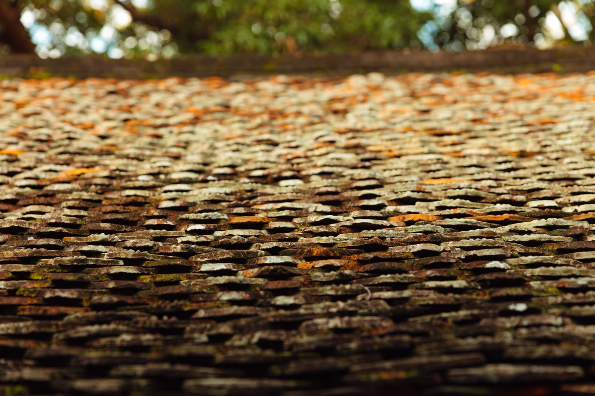

A new roof is one of the bigger decisions a homeowner makes, and nobody wants to spend that money a day sooner than they have to. At the same time, riding a failing roof too long is how a manageable project turns into rotted decking, ruined insulation, and interior damage. The goal is to replace at the right time, not too early and not too late. This guide covers the honest signs your roof has reached that point, and the real factors that determine what a replacement costs.
We have replaced a lot of roofs across the Plano area and North Texas since 2000, and we will tell any homeowner the same thing we tell our neighbors: if a repair will genuinely get you a few more good years, do the repair. Replacement is for when the roof is truly done. Here is how to know the difference.

Signs your roof is due for replacement
One warning sign on its own may only call for a repair. Several of these together usually mean the roof has reached the end of the road:
- Age. Most asphalt shingle roofs last roughly 15 to 25 years, and North Texas heat and hail push toward the shorter end. If your roof is in that window, start paying attention.
- Curling, cupping, or clawing shingles. When shingles lift at the edges or the middle, they have lost their flexibility and no longer shed water the way they should.
- Bald spots and heavy granule loss. Shiny, smooth patches where the granules have worn off mean the shingle's protection is gone and the sun is now cooking the asphalt directly.
- Widespread damage after storms. A few hail hits is a repair. Bruising across the entire roof, especially on an older roof, usually tips the scale to replacement.
- Daylight or sagging in the attic. If you can see light through the roof boards or the roofline dips, water and time have already gotten into the structure.
- Repairs that keep coming back. When you are patching the same roof every year, you are renting time on it. At some point replacement is the cheaper path.
When a repair is still the right call: if the damage is limited to one area, the rest of the roof is sound, and the roof still has real life left, a targeted roof repair is the smart, honest choice. We would rather earn your trust with a repair now than sell you a roof you do not need yet.
Repair or replace: how to think it through
The clearest way to decide is to weigh three things together: the age of the roof, how widespread the damage is, and how long you plan to stay in the home. A newer roof with isolated damage is almost always a repair. An old roof with damage in multiple areas is almost always a replacement. If a recent storm is what is forcing the question, our guide to the signs of storm and hail roof damage helps you sort out whether the storm caused a repair-level problem or finished off a roof that was already near the end.
The National Roofing Contractors Association keeps a helpful set of homeowner resources on roof maintenance and knowing when a system has reached the end of its service life, if you want an independent view alongside your roofer's.
What actually affects roof replacement cost
Homeowners always want a number, and we understand why. But an honest roofer cannot give you an accurate price without seeing the roof, because the cost is driven by factors that vary from house to house. Here is what moves the price:
- Size and pitch. Roofers price by the square, which is a 10 by 10 foot area. A bigger roof means more material and labor. A steep roof is slower and harder to work on safely, which adds to the cost.
- Material choice. Standard architectural asphalt shingles sit at the affordable end. Premium shingles, metal, and tile cost more up front but can last longer. Manufacturers like GAF publish details on their shingle lines so you can compare what you are actually getting.
- Tear-off and layers. Removing old shingles takes labor and disposal. A roof with two or three old layers to strip costs more to prepare than a single-layer roof.
- Decking condition. If the wood beneath the shingles is rotted or soft, it has to be replaced before the new roof goes on. This is often the wild card, and it is why a good estimate accounts for the possibility.
- Roof complexity. Lots of valleys, dormers, chimneys, and skylights mean more cutting, more flashing, and more labor than a simple gable roof.
- Energy performance. Some shingles reflect more heat, which matters a great deal in a North Texas summer. The federal ENERGY STAR program lists roofing products that can reduce cooling load, which may lower your bills over the life of the roof.
A note on prices you see online: those broad national averages are a starting point for understanding, not a quote. Your roof, your material, and your decking decide the real number. Any price we give you is based on an actual look at your roof, never a guess, and never a figure pulled from a chart.
Why the free inspection matters here
Everything in this guide points to the same conclusion. You cannot price or even correctly diagnose a roof from the ground, and you should be cautious of anyone who tries. A proper inspection tells you the roof's real condition, whether repair or replacement is the honest answer, and what a replacement would actually involve for your specific home. That is why every roof replacement we do starts with a free, no-obligation inspection and a clear, itemized estimate before any commitment.
The bottom line
Replace your roof when the signs stack up, age, widespread wear, structural issues, and repairs that keep returning, not before. When it is time, understand that the price reflects real, measurable factors specific to your home, and insist on an estimate built from an actual inspection. Do that, and you will spend the right amount at the right time on a roof built to last. When you are ready for a straight answer, reach out and we will take a look.
Roof replacement FAQs
How do I know if I need a new roof or just a repair?
A repair makes sense when damage is limited to one area and the roof still has years of life left. Replacement is usually the answer when the roof is near the end of its lifespan, damage is widespread, or you are paying for repairs again and again. A professional inspection settles it for certain.
What affects the cost of a roof replacement?
The main factors are the size and pitch of the roof, the material you choose, how many old layers must be torn off, the condition of the decking underneath, and the complexity of the roof shape. Every roof is different, which is why an on-site estimate is the only accurate way to price it.
How long does an asphalt shingle roof last in North Texas?
Most asphalt shingle roofs last roughly 15 to 25 years, but North Texas heat and hail can shorten that. If your roof is in that age range and showing wear, it is worth having it inspected.